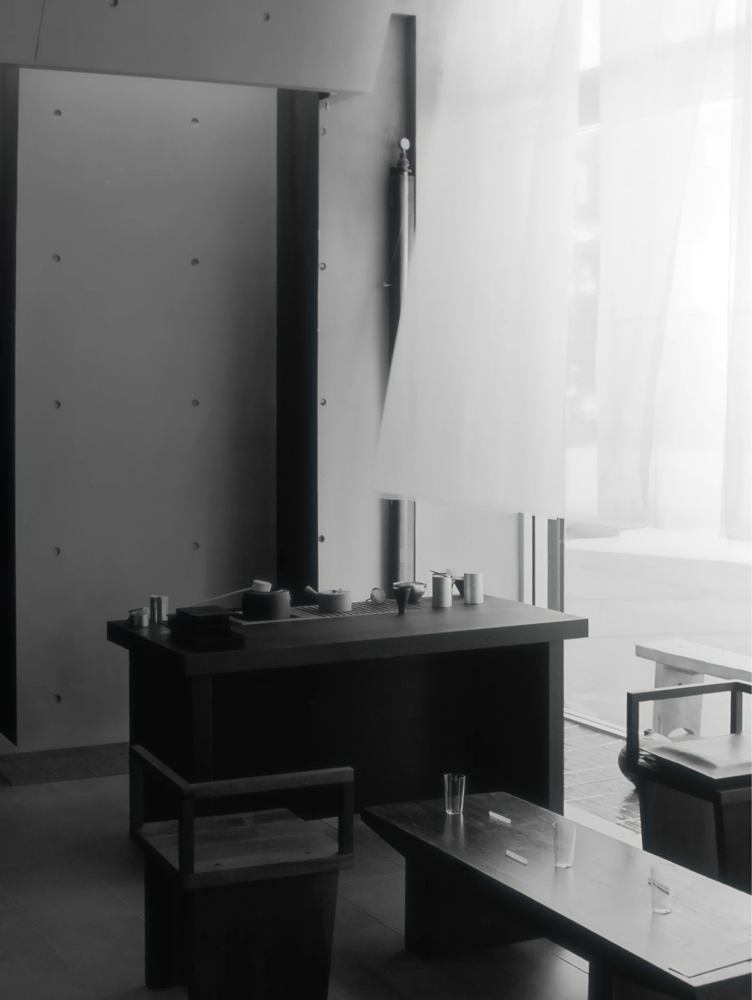
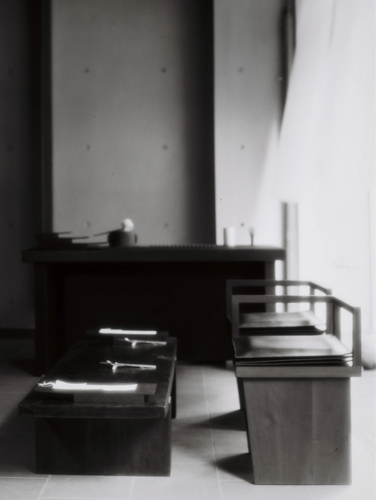
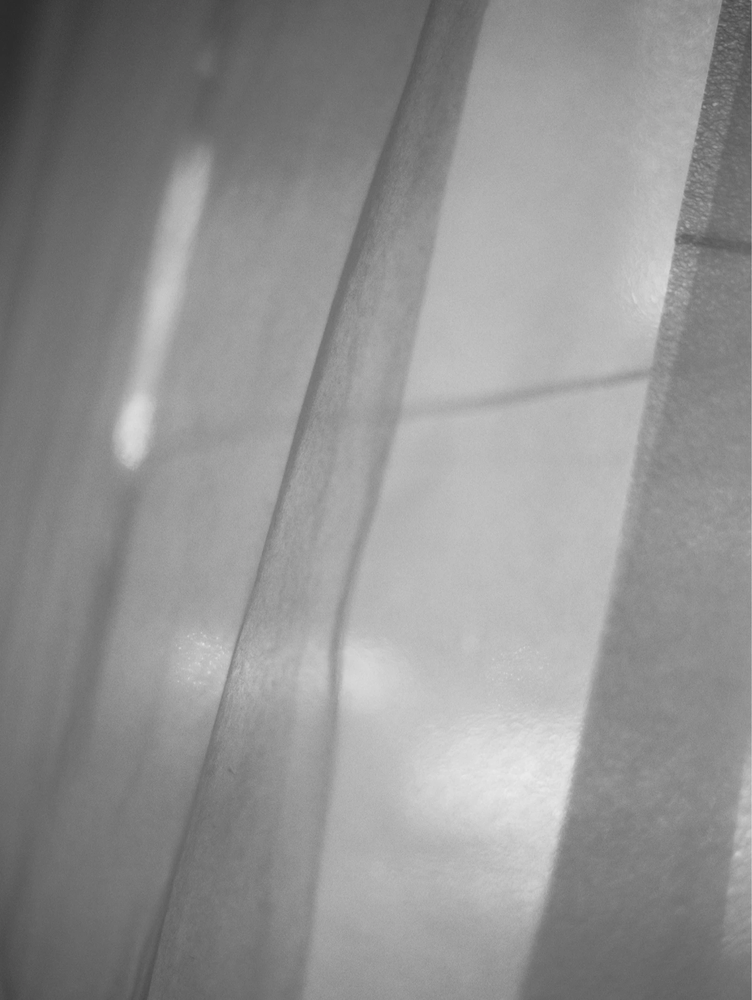

Spatial Design
Sou × Vuja De Pop Up
Sou × Vuja De Pop Up
A pop-up for the fashion label Vuja De and SOU during New York Fashion Week, and the space designed for it at the boutique Komune. Alongside SOU's table and chairs, a double-layered curtain of two Kyoto washi papers gave the room a sense of weightlessness and a soft depth of shadow, in the spirit of Tanizaki's In Praise of Shadows. Glazed tiles laid across the floor drew out fire, the theme of Vuja De's collection.
- Year
- 2026
- Client
- SOU, Vuja De
- Type
- Pop-up
- Location
- New York

